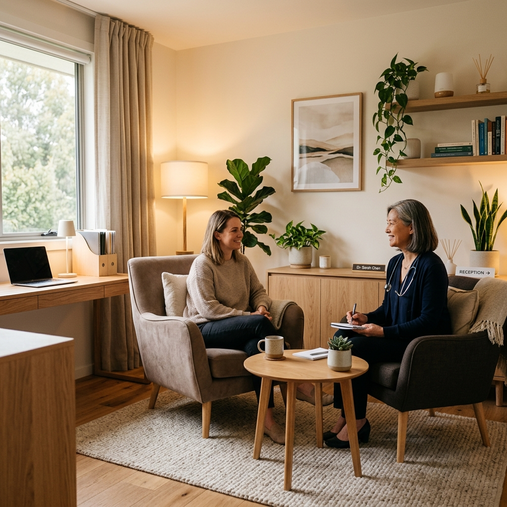

Cuidado em saúde mental com atendimento online e presencial
Cuidando da sua Saúde Mental com acolhimento, ciência e estratégia terapêutica completa.
A saúde mental influencia diretamente a forma como pensamos, sentimos, trabalhamos, nos relacionamos e enfrentamos os desafios da vida.
O objetivo não é apenas aliviar sintomas, mas ajudá-lo a desenvolver mais equilíbrio emocional, autonomia e bem-estar em todas as áreas da vida, para que o tratamento tenha fim e a sua evolução seja constante.

Dou o meu melhor para ativar o seu melhor.

Minha formação inclui especializações em Saúde Mental, Cuidados Paliativos e Medicina de Família — áreas que me ensinaram a enxergar cada pessoa em sua totalidade, com empatia e escuta atenta.
Acredito que tratar vai muito além de prescrever.
Para mim, cuidar é escutar, compreender e caminhar junto com cada paciente no seu processo de cura e autoconhecimento.
Saúde Mental
Cuidados Paliativos
Medicina de Família
Áreas em que posso ajudar

Depressão e Ansiedade

Vícios

TDAH

Autismo

Transtorno Afetivo Bipolar

Transtornos de Personalidade
O meu jeito de cuidar
Como funciona o acompanhamento
Meu trabalho é oferecer uma avaliação médica cuidadosa e um plano terapêutico individualizado, integrando conhecimento científico, escuta qualificada e psicoterapia de intervenção voltadas para promover mudanças consistentes e duradouras.
Cada pessoa possui uma história única. Por isso, o tratamento é construído de forma personalizada, respeitando suas necessidades, objetivos e momento de vida.
Contato e agendamento
Agende sua consulta
Para informações de valores e agenda, entre em contato diretamente pelo WhatsApp.
WhatsApp
+55 (11) 91297-0770
E-mail
dracamilaruliere@gmail.com
Endereço
Av. Moema, 170 - Moema, São Paulo - SP
Instagram
@camilaruliere